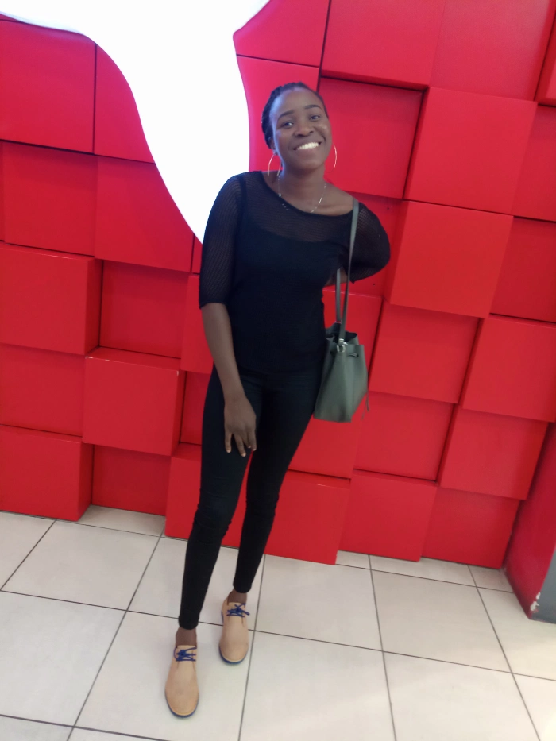

The unknown series: Life After Tertiary Institution
Posted on March 18, 2019 by moronfolu motunrayo.
My name is Moronfolu Olufunke and I will be embarking on a project that I termed “the unknown series”. By now, almost everyone knows that to every action, there is always a story behind it, and this is no different.
In my second year in the University, I went through what I would call – “my darkest hour”, it all felt like the whole universe was against me (I’ll tell you about it some other time).Reality hit me so hard that I began to think a lot about life after school – I thought about what I would do? Was what I was getting in school preparing me enough for the outside world? Will I just be an addition to the unemployed educated youths in my country? I was sick with worry about a future that was not even going to come in the next two years.
The fear of the unknown made me set out on a journey to developing myself and also to talking to people who had gone beyond me in life.
It is 2019 already, I won’t tell you everything is set in stone, but surely I am not that scared of what lies ahead anymore. I will not tell you I am fully prepared for life after the University but I cannot wait to experience it.
With careful observation during the past few months, I have realized that a lot of people in their finals in the university are scared of graduating, for most in public universities they want a strike to at least delay their graduation while they try to figure out life, while some are dripping with ideas but do not even know how to actualize them and some are already making waves, these observations has led me to what I’ll be doing for the next couple of months.
I’ll be going on an interview spree that will engage students from different universities in their final years. Maybe hearing the stories of the ones prepared for life after University will help those who are still trying to figure it out, maybe openly talking about their fears will connect them with people who have gone through this same stuff and now have a solution, maybe talking about their big plans will connect them with people who are interested in their ideas.
I will be open to ideas and featuring people who would like to share their story.